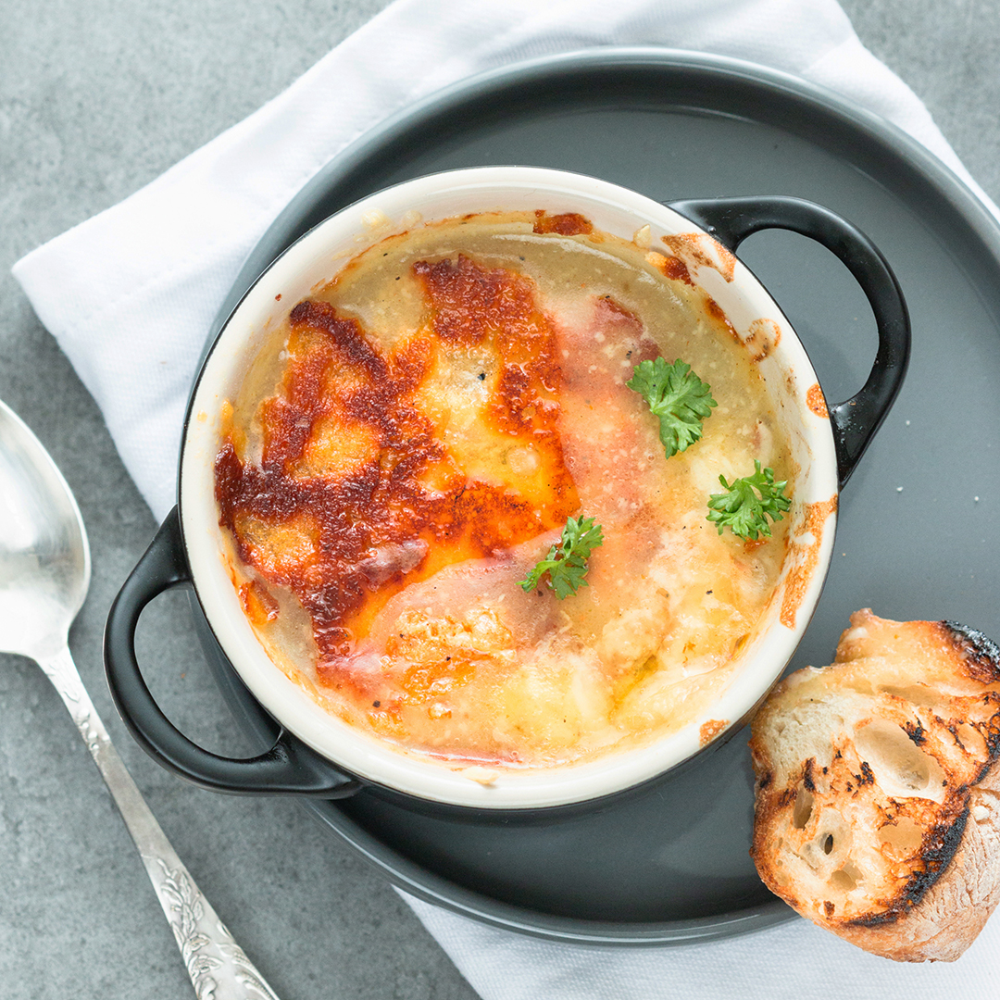

French Onion Soup

A simple French onion soup
This simple recipe will have you thinking you are on the streets of Paris. Simple, yet rich, this recipe
will make your mouth water.
Ingredients
- Unsalted butter (1/2 cup)
- Olive oil (2 tbsp)
- Onions, sliced (4 cups)
- Beef broth (4 cups)
- Dry sherry (2 tbsp)
- Dried thyme (1 tsp)
- Salt and pepper (to taste)
- French bread
- Provolone cheese (4 slices or more)
- Swiss cheese, diced (2 slices)
- Parmesan cheese, grated (1/4 cup)
Steps
- Melt the butter with the olive oil in a stock pot (8 quart works best) over meduim heat.
- Add onions and stir until onions are translucent. Make sure NOT to brown the onions.
- Add beef broth, sherry and thyme. Season with salt and pepper. Let it simmer for 30 minutes.
- Set your oven to broiler (high).
- Get a cooking sheet. Once the 30 minutes are up, fill some bowls up with the soup contents. Place
on top of each bowl a slice of bread topped with a slice of provolone, 1/2 slice of Swiss,
and 1 tablespoon of Parmesan cheese.
- Place each bowl on the cooking sheet and place in oven and leave it until the cheese bubbles and
is slightly brown.